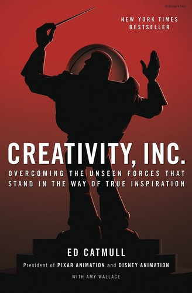

艾德·卡特穆尔（Ed Catmull）是皮克斯动画工作室的联合创始人与长期总裁，也是计算机图形学领域的先驱人物——他的博士论文直接奠定了三维计算机图形渲染的理论基础。1986年，他与史蒂夫·乔布斯和约翰·拉塞特共同创立皮克斯；此后二十余年，他主导了从《玩具总动员》到《寻找尼莫》、从《超人特攻队》到《飞屋环游记》的一系列里程碑式作品的诞生。《创新公司》出版于2014年，由兰登书屋旗下的兰登出版社发行，是卡特穆尔与资深记者艾米·华莱士（Amy Wallace）合作写就的管理回忆录，也是迄今为止对皮克斯内部创作文化最为深入的一次公开披露。本书荣获2014年《金融时报》年度商业书籍入围奖，并于2023年推出大幅增订的扩展版。
本书的核心命题是：创意并非个人天赋的自然流露，而是一套可以被设计和维护的组织文化的产物。卡特穆尔围绕这一命题，系统阐述了皮克斯用以保护创意、对抗官僚惰性的若干制度安排。其中最著名的是"智囊团"（Braintrust）机制：一群经验丰富的导演定期聚在一起，对正在制作中的影片进行坦诚而直接的批评，但这些批评不具有强制执行力——导演可以自主决定是否采纳。这一设计的精妙之处在于，它将坦诚的反馈与决策权分离开来，既确保了意见的真实性，又保护了创作者的自主性。书中还讨论了"安全失败"文化的构建、如何防止成功滋生自满、如何识别和消除组织中那些扼杀创意的隐性力量，以及领导者如何在不了解全部信息的情况下做出理性决策。
卡特穆尔在书中坦承，皮克斯在2012年被迪士尼收购后，他面临的最大挑战不是维持皮克斯的文化，而是帮助迪士尼动画重新找回创作活力。他将这段经历描述为一次关于"文化能否被移植"的真实实验——结果是部分成功的，《冰雪奇缘》的诞生正是这次尝试的重要成果。这些内容在2023年的扩展版中得到了更为详尽的呈现，增加了两个全新章节和多处后记，使本书不仅是皮克斯早期的历史，更是一部关于如何在成功之后继续创新的持续性反思。
对于企业管理者、创意工作者和投资者而言，《创新公司》提供了一个罕见的视角：一位既深度参与技术又长期主导管理的创始人，如何理解创意组织的本质。卡特穆尔的核心洞见是，优秀的创意公司从来不是靠几位天才支撑的，而是靠一套能够让普通人持续做出非凡工作的制度和文化。这一判断与查理·芒格关于"激励机制决定行为"的底层逻辑相互呼应：真正的管理艺术，在于设计出让正确行为自然发生的系统，而不是依赖个别英雄的超常发挥。本书是理解创意组织运作机制最深刻、最诚实的一部第一手文献。